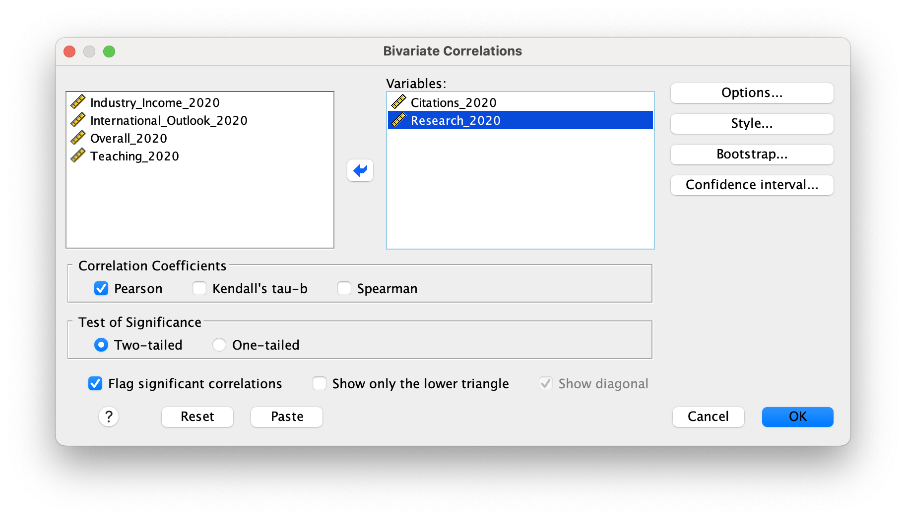

MA Research Methods Learning SPSS
SPSS
SPSS Workshop
Getting set up
You can download SPSS from the KCL Software Hub. You will need to log in with your KCL credentials to access the software.
Search for “IBM SPSS Statistics”, select your platform (Windows / Mac), and add to cart:
Next check out, adding your details, which will allow you to download.
Once you have downloaded the software, you will need to install SPSS on your computer.
Section 1: The SPSS environment
The aim of this section is to familiarise ourselves with the SPSS environment. The SPSS data editor contains two views which you can switch between using the tabs at the bottom left of the screen (figure 1).
Figure 1. (1) The data view, where we enter our data (similar to an Excel spreadsheet). Each row represents a case (e.g. person, school, organisation).
(2) The variable view, where we label and describe our data. Here, each row represents a variable (e.g. age, gender, educational attainment). The columns provide information about the characteristics of variables. Table 1 explains each of the columns.
- The data view, where we enter our data (similar to an Excel spreadsheet). Each row represents a case (e.g. person, school, organisation).
- The variable view, where we label and describe our data. Here, each row represents a variable (e.g. age, gender, educational attainment). The columns provide information about the characteristics of variables. Table 1 explains each of the columns.
NB: Somewhat confusingly, SPSS sometimes refers to p-value as ‘sig’. What p-value really signifies is the probability that the results have occurred by chance, given the null hypothesis. If the p (probability) is low, then we say the result is significant. In Education and many social sciences, the ‘cut off’ point is often 0.05. And we refer to this cut-off as ‘alpha’.
Table 1. Explanation of columns in SPSS variable view
| Column title | What it means |
| Name | This column provides the name of the variable. Older versions of SPSS were limited to 8 character names, which is why you often find rather intriguing names for variables in data sets. New versions of SPSS are not limited to 8 characters, but lengthy descriptions should not be included in the Name. They go in the Label column. |
| Type | This column indicates the type of variable that is reflected in this particular row. There are 8 options to choose from: Numeric, Comma, Dot, Scientific notation, Date, Dollar, Custom currency, and String. Most variables beginning users will encounter are either Numeric or String variables. Numeric variables are numbers that either represent a value (e.g., 1=Catholic) or are the value of interest (height=73 inches). String numbers are text and can only be treated as such. As a result, very few manipulations can be performed on them in SPSS. |
| Width | The number of digits displayed for numerical values or the length of a string variable. |
| Decimals | This column allows you to control the number of characters after the decimal place. |
| Label | This column allows you to provide a more extensive description of the variable. |
| Values | This column allows you to provide a key for what the numbers of a numeric variable may represent (e.g., 1=Catholic, 2=Protestant). |
| Missing | This column allows you to indicate whether there are any missing values in a variable. Values marked as missing are excluded from analyses in SPSS. |
| Columns | The width of each column in the Data View spreadsheet. Note that this is not the same as the number of digits displayed for each value. This simply refers to the width of the actual column in the spreadsheet. |
| Align | This column indicates the alignment of the variable in the Data View. |
| Measure | This column indicates the level of measurement of the variable. There are three from which you can choose: Nominal, Ordinal, and Scale. |
| Role | The role that a variable will play in your analyses (i.e., independent variable, dependent variable, both independent and dependent). Some options in SPSS allow you to pre-select variables for particular analyses based on their defined roles. Any variable that meets the role requirements will be available for use in such analyses. It is not recommended that you tamper with this, at least not as novices |
Source one and Source two
Entering data
Click on ‘file’, then ‘new’, and then ‘data’ to open a blank data editor.
Task 1: Give your variables the following characteristics (in the variable view).
|
Name |
Type |
Width |
Deci-mals |
Label |
Values |
Miss -ing |
Columns |
Align |
Measure |
|
IDnumber |
Numeric |
8 |
0 |
Participant ID |
None |
None |
8 |
Right |
Scale |
|
Gender |
Numeric |
8 |
0 |
Gender of Participant |
1 = Male 2 = Female |
None |
8 |
Right |
Nominal |
|
IQ |
Numeric |
8 |
0 |
IQ score |
None |
None |
8 |
Right |
Scale |
Note: type, width, columns, align can often be left as the default. Also, changing the decimal value will not alter the information you input if you only input whole numbers.
Task 2: Try entering the following data into SPSS (in the data view).
| IDnumber | Gender | IQ |
| 1 | Male | 105 |
| 2 | Female | 110 |
| 3 | Female | 112 |
| 4 | Female | 102 |
| 5 | Male | 100 |
| 6 | Male | 120 |
| 7 | Female | 98 |
| 8 | Male | 103 |
| 9 | Female | 128 |
| 10 | Male | 110 |
Remember that 1 = Male, 2 = Female for Gender
Finally, locate the Output Window, which is empty at the moment.
** You may want to save your data file that is generated to in a space you can find (e.g., on your desktop for now) using the file name section1.sav**
Section 2: Describing your data
The first aim of this task is to obtain descriptive statistics such as means, standard deviations, frequencies and range of various variables. Download the data file PISA_2022.sav and open it in SPSS.
The data are from the OECD’s 2022 survey - the full data set has been cut down to make things easier. You will find the following variables in the data:
| Item | Description |
| ST004D01T | Gender: Male / Female / NA. |
| CNT | Country |
| PV1MATH | Mathematics test scores (0-1000) |
| PV1READ | Reading test scores (0-1000) |
| PV1SCIE. | Science test scores (0-1000) |
| HOMEPOS | A measure of wealth (home possessions) Normalised with a mean of 0, |
| ESCS | A measure of social class Normalised with a mean of 0, |
| OCOD1 | Mother’s occupation |
| OCOD2 | Father’s occupation |
| ST253Q01JA | How many digital devices in your home? |
| ST016Q01NA | How satisfied are you with life (/10) |
| ST253Q01JA | How many digital devices in your home? |
| IC180Q01JA | Agree/disagree: I trust what I read online |
| PA185Q08JA | Agree/disagree: At home, we discuss the books we are reading |
| life_sat | Satisfied / Not-satisfied |
Task 1: Obtain descriptive statistics for the following variables
Q1: How many students are there in the data set?
613,744 students
Q2: What kind of variable is ST004D01T?
Categorical (it is a gender variable)
Q3: What kind of variable is ST253Q0JA?
Ordinal - it is a count of digital devices in the home (the responses are: There are no devices, one, two, three etc)
Describing data
There are a number of ways of obtaining information describing data using SPSS, in this exercise you will use the Descriptives option in the Analyze ➝ Descriptive statistics menu (see Figure 2.1). The Descriptives option should be used to generate descriptive information about continuous variables using all cases in the data file. The Frequencies option should be used to generate descriptive information about categorical variables using all cases in the data file.

Figure 2.1
Task 2: The Descriptives option
Assume we are required to produce descriptive information such as the mean math score by gender for all students in the sample. To do this, first select the Analyze pull down menu. Choose the Descriptive statistics option. You are presented with a further menu where you should click on Descriptives.
You are then presented with a window showing a list of variables in the PISA_2022.sav data file (see figure 2.2). First select the variables you want to look at. Here select both AGE and TENURE (by clicking on the variable in the list and then clicking the arrow button). Now you have to choose what type of statistics you wish to generate. To do this click on the grey Options button.
You can now choose various descriptive statistics which describe the nature of your data. To select an option, click on the word and a cross will appear in its box indicating that it is selected. Select these statistics: Mean, Standard Deviation, Minimum, Maximum, and Range. Once these are selected click on the Continue button. Then click OK.

Figure 2.2
You are then presented with the output screen presented in figure 2.3, the Descriptives requested will have been generated in this window. You can look at your output by moving about in the window using the arrow keys on the keyboard or the Page up/ Page down buttons. You can also use the mouse and the “Scroll Bar” on the right hand edge of the output window to move around.
** You may want to save your output that is generated to in the same space you saved the previous work using the filename section2.spv, but do not close this window once you have saved it**

Figure 2.3
Task 2: More descriptive statistics
Q4: What is the mean and standard deviation of the mathematics score?
Mean = 440.87467 Standard deviation = 101.840726
Q5: Which subject has the highest maximum score?
Mathematics (943.041)
Q6: What is the range of the number of digital devices in the home? What is the mean?
From 1 to 8 - the mean is 6.9855
Task 3: The Frequencies option
Assume we are required to produce other descriptive information such as the number and percentage of teachers who are female, who work part-time and who are satisfied with their jobs. To do this, again select the Analyze pull down menu. Choose the Descriptive statistics option, but this time click on Frequencies in the further menu.
You are again presented with a window showing a list of variables in the PISA_2022.sav data file (see figure 2.4). First select the variables you want to look at. Here select ST004D01T (Student Standardised) Gender and ISCO-08 Occupation code, (by clicking on the variable in the list and then clicking the arrow button). SPSS will produce counts and percentages by default for this analysis. If you want to display your frequency data in a chart, you can do this by clicking on the Charts button and selecting a Bar chart.
Figure 2.4
Click on OK and you will go straight to the output window where your information is generated. You may have some information in this window from the previous task so be aware of this. The new output provides frequency counts of the data for each of the variables you selected and also a series of percentages (see Fig 2.5). Note that for this analysis Percent and Valid Percent are the same as there are no missing data for these variables.
Figure 2.5
Save your output again (overwrite the previous section2.spv as long as your output file includes the data generated for both task 2 and 3).
Task 3 Frequencies
Q7: What percentage of boys and girls are in the survey?
49.8% Female; 50.2% Male
Q8: How many mothers are there in the survey who are electrical engineers?
125
Section 3: Performing a Chi-square test
The researcher who collected the data was then interested in whether there were any associations between some of the variables studied in the survey. In particular, the researcher was interested in examining the associations between two of the categorical variables in the questionnaire. In order to do this Chi-square tests were required.
The hypothesis that the researcher wanted to test:
H1: The number of boys and girls who are satisfied with life is the same
Task 4: Conducting a Chi Square test
To carry out a Chi-square analysis click on Descriptive statistics in the Analyze pull down menu. Then select Crosstabs. You will see the variables in the file teachers1.sav listed in the Crosstabs window on the left (See Fig 3.1 and 3.2). Put the dependent variable (DV) into the Row(s): box and the independent variable (IV) into the Column(s): box (remember it is the IV that affects the DV, not the other way round). Once you have selected the two variables, click on the Statistics button (on the side of the window). Fig 3.3 will appear and here select the Chi Square option. Then click on Continue. Click on the Cells button and Fig 3.4 will appear. In the Counts sector click on the Expected selection, the Observed selection should already be selected. This ensures that the expected and the observed frequencies are generated in each cell of the Chi square contingency table. Also in this window, select the Percentages: Column option. Click on Continue then OK to generate your output.
Q9) Describing what you have found - Use the data in your output window to complete the statement below:
___________ percent of boys who were satisfied with their life and _________ percent were dissatisfied.
____________ percent of girls who were satisfied with their life and _____________ percent were dissatisfied. Compared to boys, girls were more likely to be satisfied/dissatisfied (delete as appropriate) with their lives.
This association was/was not (delete as appropriate) statistically significant (p<0.05/p>0.05) (delete as appropriate).
Q10) (Advanced) What is the null hypothesis for the test that you have conducted?
Q11) (Advanced) Using the data in your output window, report the results of the chi square below. Report the results like this: ùùå2 (degrees of freedom) = Pearson Chi Square value , p value
ùùå2 (______) = __________ , ___________
Save your output as section3.spv.
78.3 percent of boys who were satisfied with their life and 21.7 percent were dissatisfied.
46.3 percent of girls who were satisfied with their life and 60.1 percent were dissatisfied. Compared to boys, girls were more likely to be dissatisfied with their lives.
This association was statistically significant (p<0.05).
Q10) (Advanced) What is the null hypothesis for the test that you have conducted?
Boys and girls report the same level of life satisfaction
Q11) (Advanced) Using the data in your output window, report the results of the chi square below. Report the results like this: ùùå2 (degrees of freedom) = Pearson Chi Square value , p value
ùùå2 (1) = 7803.811 , p <0.01
Section 4: Performing a T-test
Paired and independent samples t-tests
Introduction
There are two types of t-test that look at the difference between 2 groups or conditions. These are Paired t-tests (within/related subjects) and Independent samples t-test (between/unrelated subjects). We are going to look at both types using the stress.sav data file. Using this data file we can perform both types of t-test.
You will find five different variables in the Wellbeing.sav data file. The data comes from a study into the wellbeing of university students in Colombia which measured their life satisfaction with a survey before and after a course on wellbeing. The data also include a group of control students who didn’t take the course.
The variables in the data set are:
| Variable | Description |
|---|---|
| ID | A participant unique identifier |
| Gender | The Gender of the student (1 = Male / 2 = Female) |
| Group | Whether the student was in the control or condition group (Intervention/ Control) |
| Life_sat_pre | Respondents reports of their life satisfaction (/10) before the intervention |
| Life_sat_post | Respondents reports of their life satisfaction (/10) after the intervention |
Task 5: Paired t-test
Here we are going to test whether or not there is a statistically significant difference between the overall stress levels at time one and time two.
Procedure
Choose the Compare Means & Proportions option in the Analyze pull down menu. Then select the appropriate type of t-test (Paired-Samples T Test). You will be presented with a window (See fig 4.1).
Figure 4.1
Click on the two repeated measures variables (a repeated measures variable is one measured more than once, i.e. it is repeated) and transfer them into the Paired Variables: box. Then simply click on OK. There you have it. Your t-test will appear in the output window.
Task 6: Paired t-test
Q12: Is there a difference in wellbeing between pre and post test?
Yes, the mean of the pre-test is 7.0549 and the post test 7.7134
Q13 Is this difference statistically significant? What is the p-value?
The p-value is <0.01
Q14 (Advanced) What is the Null Hypothesis for this test?
That the means of the pre- and post-test groups are equal
Q15 (Advanced) Can the Null Hypothesis be rejected? Fill in: t ( df ) = t (the test statistic) , p-value
Yes the p-value is <0.01 so the null hypothesis can be rejected. Fill in: t(327) = -7.973, <0.01
Task 2: Independent-samples t-test
We are now going to test whether there is a difference in stress levels between males and females at time 1 (an independent t-test) and then at time 2. To run the t-test, first select the Compare Means & Proportions option in the Analyze pull down menu. Then select the relevant t-test. Once the Independent-samples t-test window is presented, select the dependent variables (into the Test Variable(s): box). Then select the variable that defines the different groups we wish to compare (Gender) into the Grouping Variable: box. You then have to tell SPSS what groups within the grouping variable you wish to compare. Here, in Gender, there are only two different groups (male and female). As such, click on the Define Groups button and enter 1 (male) in the Group 1: box and 2 (female) in the Group 2 (if not automatically entered): box.
Figure 4.2
Now click continue. Then click on OK and your tests will run.
Interpreting the outputs
The output table shows the results from both t-tests: one comparing the stress levels of males and females at Time 1 (on top) and one comparing the stress levels of males and females at Time 2. Use the p values (in the column labelled ‘Sig. (2-tailed)’ and the row ‘Equal variances not assumed’) that are on the bottom in each box to answer the questions below. This is a more cautious test.
Task 5: Interpreting the output
Q16: Summarise your findings. (How do males and females differ in their wellbeing levels on the pre-test? What about on the post-test?
On the pre-test Males (“1”) score higher (mean = 7.4565) than females (“2”) (mean = 6.7632). On the post-test Males (“1”) also score higher (mean = 7.8986) than females (“2”) (mean = 7.5789).
Q17 What is the p-value for the t-test at the pre-test? What is the p-value for the t-test at the post-test? Are the differences ‘statistically significant’?)
On the pre-test the p-value is <0.01 - the result is significant.
On the post-test the p-value for a two-tailed test with equal variance not assumed is 0.45 - the result is not significant.
Q18 What are the Null Hypotheses for these tests?
The means of the wellbeing scores for males and females are the same
Q19 Can the null hypotheses be rejected on a) the pre-test; b) the post-test?
On the pre-test the p-value is <0.01 - the result is significant.
On the post-test the p-value for a two-tailed test with equal variance not assumed is 0.45 - the result is not significant.
Q20 Describe your findings?
Male students had higher wellbeing that female students on the pretest (mean = 7.4565 vs 6.7632) - this difference was statistically significant (t(326) = 4.194, p<.001). However, this difference was not significant (t(326) = 2.016, p<.045) on the post-test (mean = 7.8986 vs 7.5789).
One of the assumptions of an independent t-test is that we have homogeneous (similar) variances in both groups. If we violate this assumption, the results of our t-test may be invalid. Therefore, we must test whether this assumption has been violated before interpreting our t-test. This is done with the Levene’s Test.
A significant result (i.e. p<0.05) for our Levene’s test means we have violated the assumption. In which case, we must use an ‘adjusted’ t-test. This is given on the row labelled “equal variances not assumed” in the SPSS output.
However, if we have not violated the homogeneity of variances assumption (i.e. Levene’s is p>0.05) we report the t-test results on the row labelled “equal variances assumed”.
Section 5: Introduction to Correlation
University performance can be judged from a number of perspectives. For universities around the world, league table position is a further influential indicator of organisational performance. A number of league tables exist but the Times Higher Education league table is highly respected. Universities want to know how they can improve their performance and the aim of this task is to search for potential predictors of league table performance.
The data set THE.sav contains the following variables for 1397 universities in 2020:
| Variable | Description |
|---|---|
| Institution | University Name |
| Location | Location |
| Citations_2020 | A score out of 100 measuring how highly cited the academics at an institution are |
| Industry_Income_2020 | A score out of 100 measuring the income from industrial collaborations (spin out companies, consulting etc.) |
| International_Outlook_2020 | A score out of 100 measuring how international an institution is (based on numbers of international students, faculty etc) |
| Research_2020 | A score out of 100 measuring the institution’s research quality |
| Teaching_2020 | A score out of 100 measuring the institution’s teaching quality |
| Overall_2020 | An overall score for each institution |
To carry out a bivariate correlation, click on the Analyze pull down menu and then click on the Correlate option. Then select Bivariate. The window presented in Figure 5.1 will appear. On the left hand side of the window you will see the list of the variables in the data file. Select the variables and click on the OK button.

Figure 5.1
To interpret correlations, the following guidelines are often used:
| Strength | Correlation |
| Very weak | 0.00-0.19 |
| Weak | 0.20-0.39 |
| Moderate | 0.40-0.59 |
| Strong | 0.60-0.79 |
| Very strong | 0.80-1.00 |
Task 5: Correlation
Q20: What is the strength and direction of the correlation between Research_2020 and Citations_2020?
ρ = .609 (strong positive correlation) p <.001
Q21: What is the strength and direction of the correlation between Industry_Income_2020 and Overall_2020?
ρ = .394 (weak positive correlation) p <.001
Q22: What is the strength and direction of the correlation between Teaching_2020 and Research_2020?
ρ = .901 (very strong positive correlation) p <.001
Further help with SPSS
• Kent State University has a comprehensive guide to SPSS
• SPSS Tutorials Andy Field’s vidoe tutorials in SPSS can be helpful
• For a comprehensive guide Andy Field’s Discovering statistics using SPSS is a good place to start and available on the library site